Hundewiese am Nachmittag
Frappies ist die eine Gesundheitsakte für deinen Hund: alles, wonach die Praxis fragen könnte, strukturiert und vorzeigbar, mit Erinnerungen, die aus der Akte entstehen. KI hilft beim Verstehen. Die Praxis entscheidet.
Die Welt dazu ist eine Wiese in spätem Licht. Kleetinte trägt Schale, Überschriften und Text. Tennisball-Filz liegt auf genau einer Sache: dem Nächsten. Frisbee-Orange ruft nur, wenn etwas fällig ist. Alles andere ist blasser Kleeboden unter weißen Karten. Nichts auf dem Bildschirm ist grau.
- warm
- klar und knapp
- verlässlich, vorzeigbar
- ehrlich über KI
- witzig im Detail: der Hund, der Ball
- niedlich, verkindlicht
- förmlich, behördlich
- klinisch kalt
- allwissend, beruhigend um jeden Preis
- witzig im Datensatz
Der Satz, den jede Entscheidung bestehen muss: Der Ball liegt auf dem Nächsten. Wenn Filz an zwei Stellen gleichzeitig leuchtet, weiß der Hund nicht, wohin er laufen soll.
Kapitel 00 MarkeEin Ball am Ende der Runde
Die Bildmarke ist ein Tennisball am Ende einer Zoomies-Schleife: die hektische Runde des Hundes als eine lockere Kreidelinie, und der Filzball, dem er hinterherjagt. Die Wortmarke setzt „frappies“ in Bricolage Grotesque ExtraBold und ersetzt den i-Punkt durch denselben Ball.
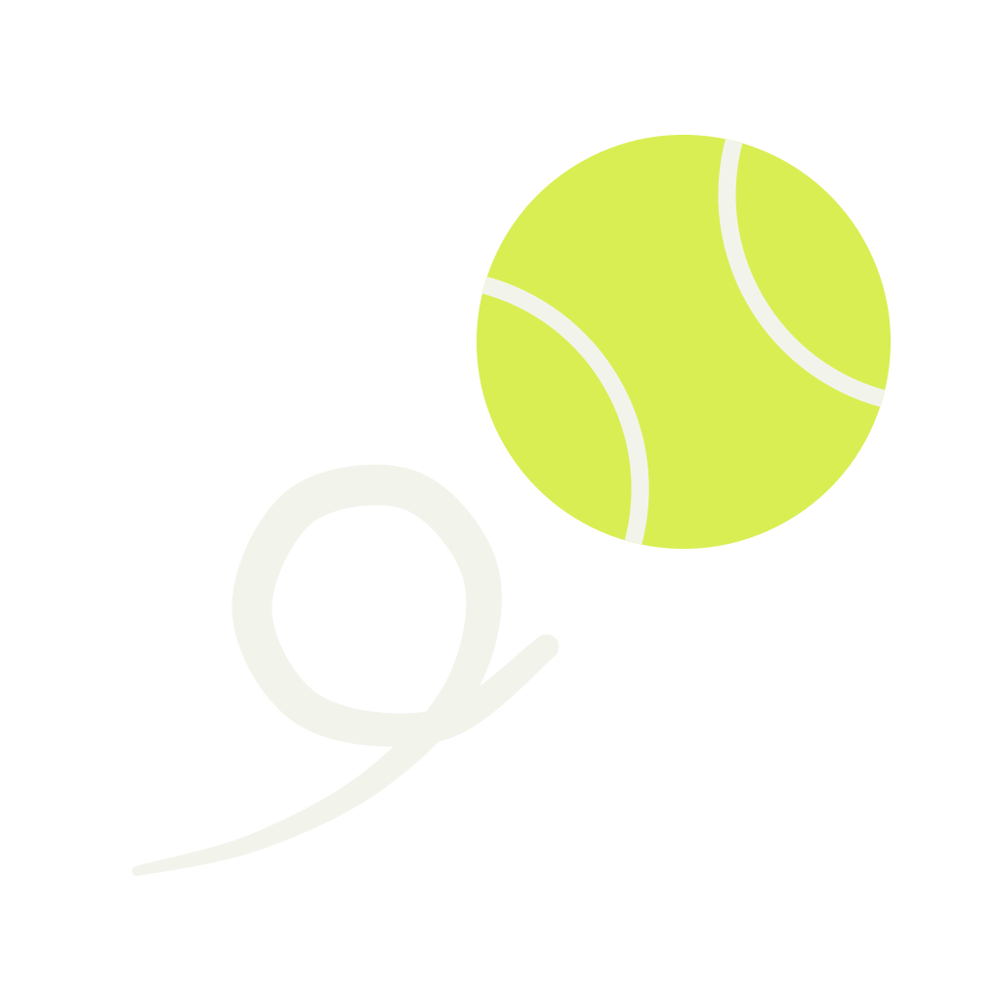
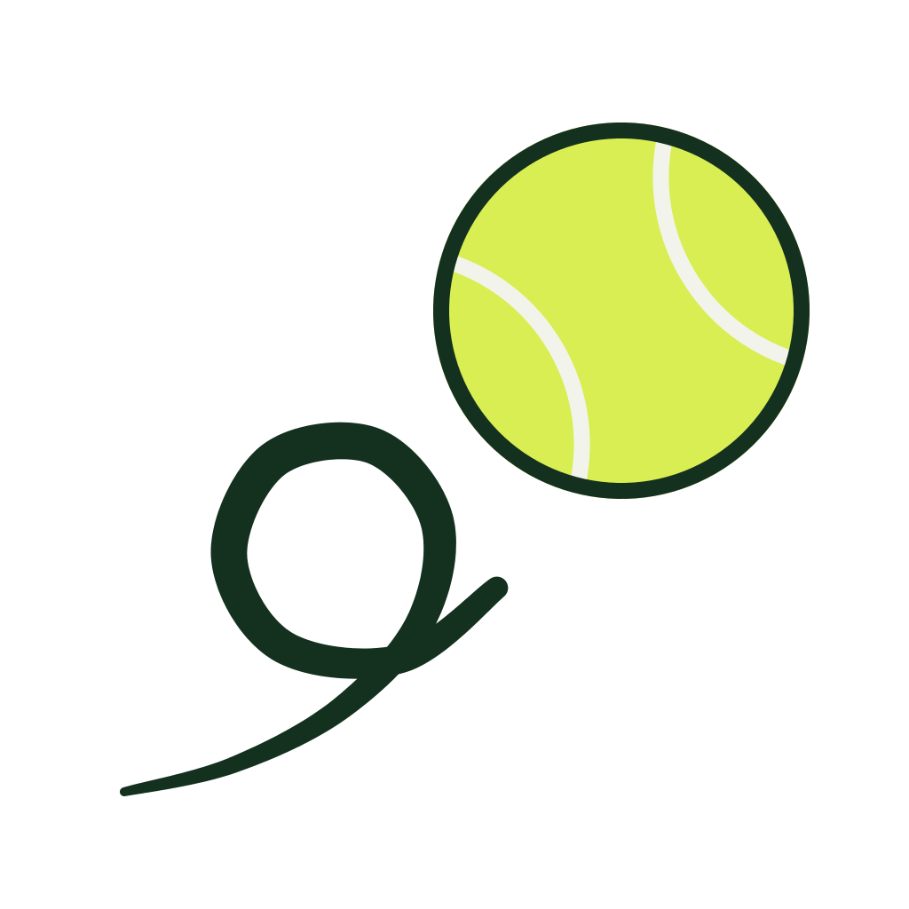
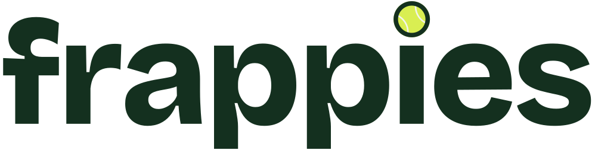
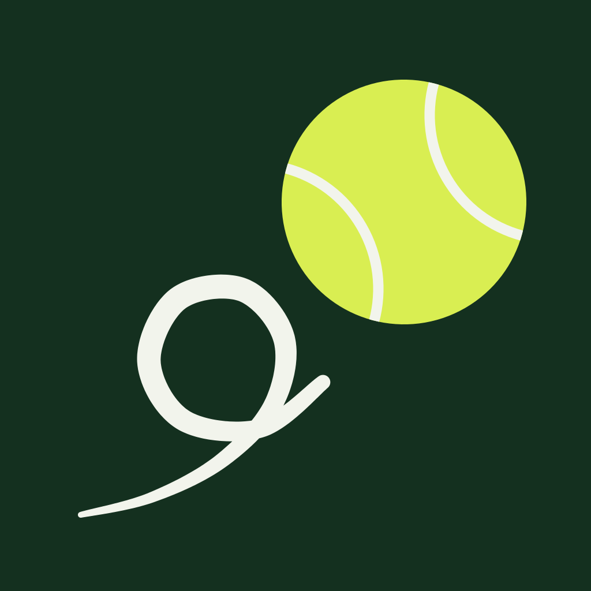
Drei Farben, sonst nichts. Tinte, Filz, Kreide, in beiden Themes gleich. Kein Verlauf, kein Schatten, keine Drehung, kein Weiß als Füllung der Wortmarke. Der Ball wird nie verschoben und nie zusätzlich neben die Wortmarke gesetzt.
Kapitel 01 LogoEine Rampe, ein Filz, ein Orange
Jedes Neutral kommt aus einer Kleerampe, vom dunklen Boden bis zum weißen Karton. Der Dunkelmodus ist dieselbe Rampe vom anderen Ende gelesen. Filz bleibt gleich, Wiesengrün wird im Dunkeln selbst zu Filz, weil Grün auf dunklem Boden verschwindet.
Felt Means Next. Filz geht nur auf die Hauptaktion, den aktiven Tab, den aktiven Hund und das nächste Element. Jeder andere gewählte Zustand ist Tintenfüllung mit hellem Text.
Ink On Felt. Alles auf Filz ist Kleetinte, in beiden Themes. Weiß oder Grün auf Filz ist ein Fehler.
Frisbee Is Due. Orange Füllung nur auf heute fälligen oder überfälligen Elementen. Nie für Kategorien, Dekoration oder Handlungsaufforderungen.
One Ramp. Keine Grautöne, keine schwarzen Transparenzen außer dem einen FAB-Schatten. Jede erlaubte Text-auf-Fläche-Paarung ist mit scripts/check-contrast.js gegen WCAG geprüft.
Schwer oben, rund in der Hand
Bricolage Grotesque ExtraBold für alles, was auf Armlänge in der Praxis lesbar sein muss. Figtree für alles, was der Daumen bedient. Der Gewichtssprung ist groß, der Größensprung bescheiden. Deutsch zuerst, und Deutsch läuft ein Drittel länger: Labels brechen um, nie ab.
3 Sachen zu tun
Heavy Headline. Überschriften und Zahlen in Bricolage. Labels, Zeilen und Bedienelemente in Figtree. Nie einen Absatz in Bricolage, nie eine Zahl, die zählt, in Figtree.
No Bare Count. Eine Zahl steht immer neben dem, was sie zählt: Zahl, Label, letzter Eintrag.
Kapitel 03 TypografieZwei Radien, keine Schatten
14 Pixel für Dinge, die man bedient. 18 Pixel für Dinge, die man liest. 28 Pixel nur unten an der Schale. Tiefe ist tonal: Kleeboden, weiße Karte und Kleeschale sind drei Stufen einer Rampe, und diese Stufe ist die einzige Trennung, die eine Fläche bekommt.
44 Point. Jedes tippbare Element, auch der 10-px-Punkt, sitzt in einer Trefferfläche von mindestens 44 pt. Das sichtbare Zeichen darf klein sein, das Ziel nie.
Kapitel 04 Form und RaumDie Bausteine, wie gebaut
Jede Komponente hier ist aus den Tokens gesetzt, nicht nachgezeichnet. Die Website erbt sie und ergänzt nur, was das Medium verlangt: Hover als Tonstufe, nie als Höhe.
Buttons
Felder
Chips
Akten-Zellen
Als Nächstes
Banner
Ein Hund, acht Posen
Ein struppiger Mischling, mit lockerer Tuschelinie in Kleetinte gezeichnet, eine flache Filzfläche am Körper, sonst nichts. Jede Pose hat eine Bedeutung und gehört zu einem Moment: dem leeren Zustand, der Ankunft, dem Warten. Nie zu Datenzeilen, nie zu Formularen.
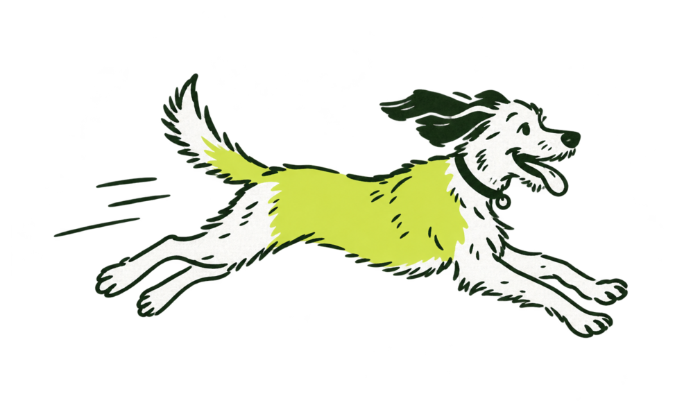
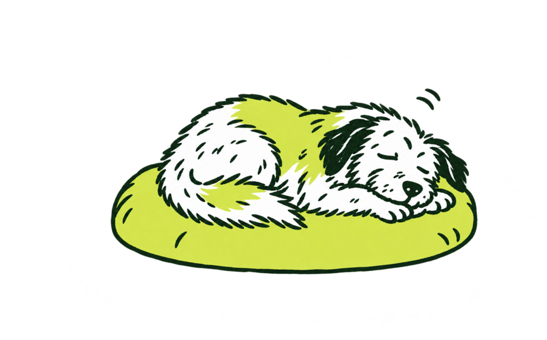
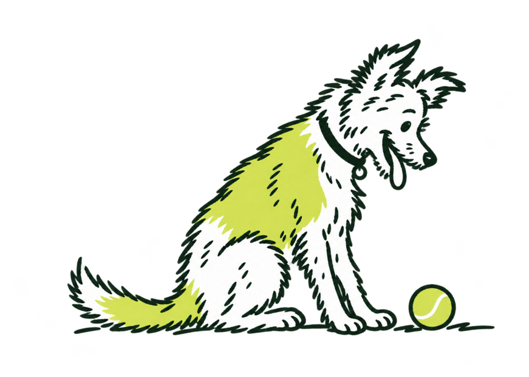
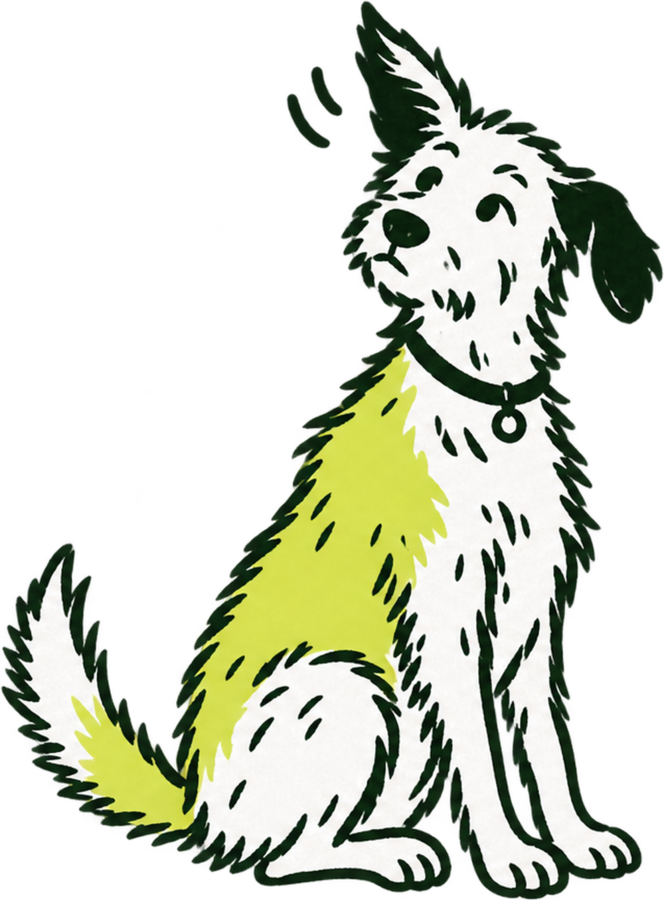
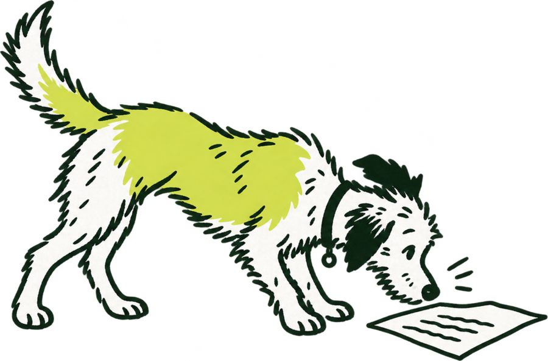
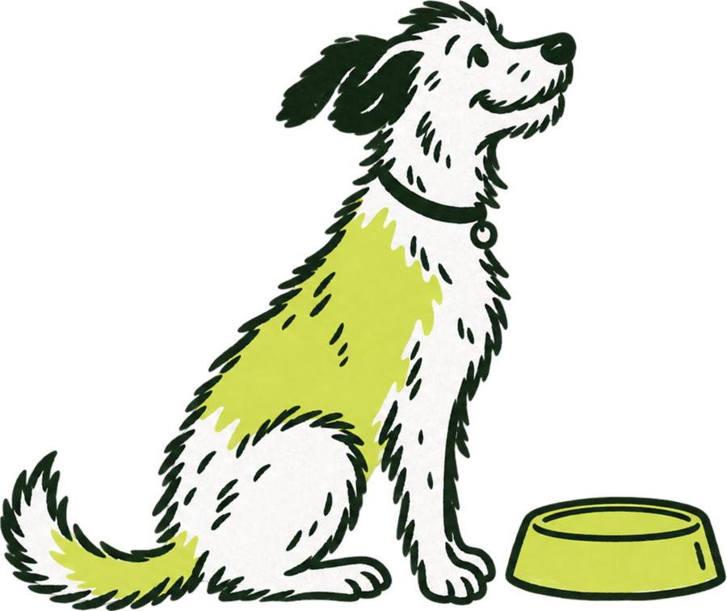
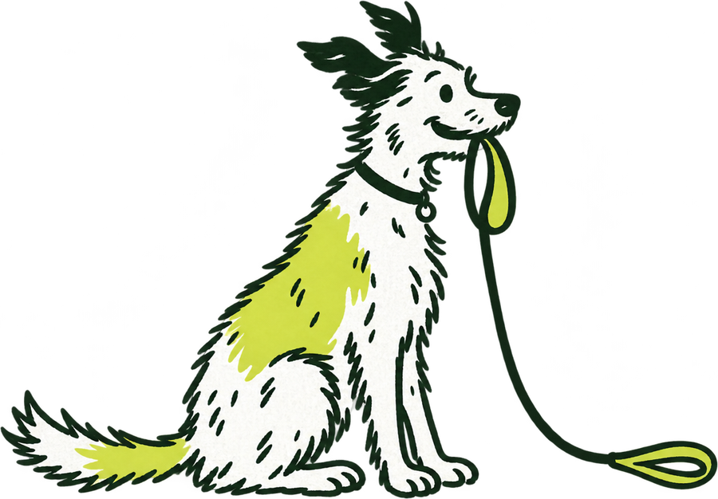
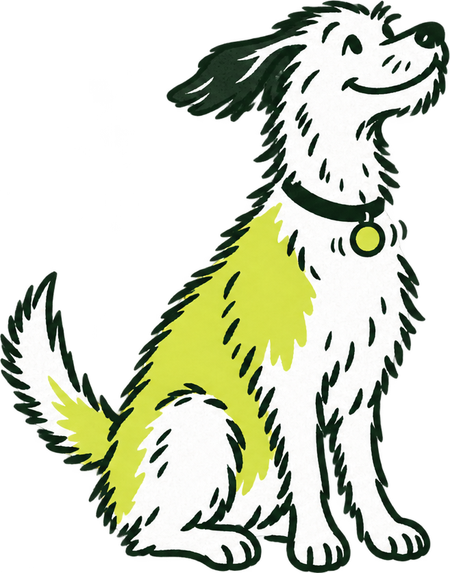
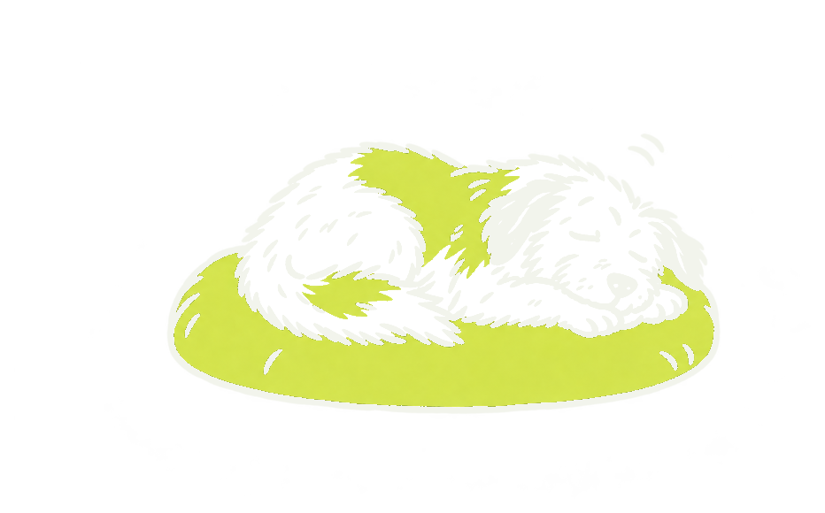
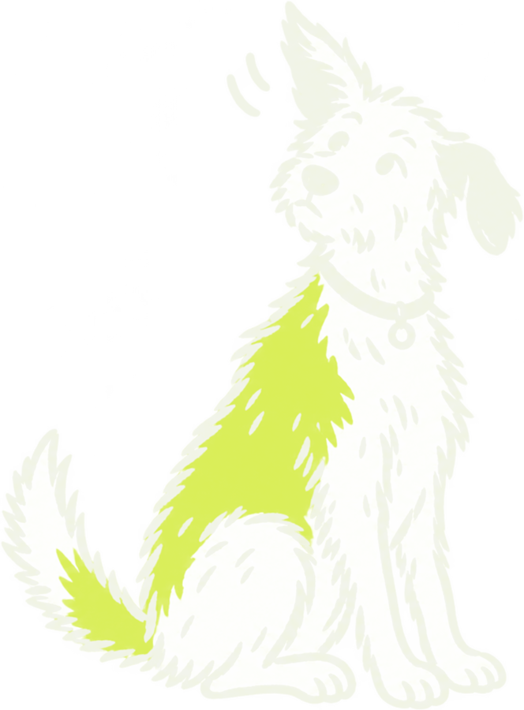
Kein zweiter Stil. Kein Stockbild, keine Fotografie als Markenmittel, kein Cartoon. Jede neue Pose entsteht aus dem Stil-Prompt im Kapitel, mit der Zoomie als Referenz, und trägt ihre Herkunft eingebettet.
Kapitel 05 IllustrationDu, klein geschrieben
Frappies spricht wie jemand, der selbst Hunde hat und Ordnung mag: direkt, freundlich, ohne Behördendeutsch und ohne Babysprache. Humor sitzt im Bild und in einem Halbsatz, nie in der Datenzeile und nie in einer Fehlermeldung. Deutsch zuerst, Englisch folgt denselben Regeln.
Leg zuerst deinen Hund an, dann führst du hier seine Akte.
Bitte legen Sie zunächst ein Haustierprofil an, um fortzufahren.
Das hat nicht geklappt. Bitte versuch es noch einmal.
Fehler 500: Interner Serverfehler
Erkrankung löschen? Die Einträge dazu werden entfernt. → Löschen
Sind Sie sicher? → OK
Gerade ist nichts fällig.
Keine Einträge vorhanden 🐶✨
KI-Nutzungen ohne Monatskontingent. Alles andere gibt es auch kostenlos.
Schalte jetzt alle Pro-Features frei und hol das Beste für deinen Liebling raus!
Feste Begriffe. Hund, nie Haustier. Erkrankung, nicht Krankheit. Gewichtseintrag, nicht Wiegung. Premium-Test, nicht Probeabo. Abo, nicht Paket. Dasselbe Wort für denselben Begriff, überall.
KI-Hinweise sind Pflicht. Wörtlich, über jedem KI-Ergebnis, nicht gekürzt, nicht weichgespült. Auch auf der Website, wo KI-Funktionen beworben werden.
Kapitel 08 SpracheEine Welt auf jeder Fläche
Die App ist gebaut und verbindlich. Alles andere leitet sich daraus ab und bekommt nur, was das Medium verlangt: die Website Breakpoints und Hover, die E-Mail Tabellen und Systemschrift, der Store sechs Sekunden Aufmerksamkeit.
- AppBedienen. Eine Hand, kurze Besuche, in der Praxis. Marke in präzisen Details: der Ball, die Filzzahl, der Hund im leeren Zustand. Hell und Dunkel gleichwertig.
- WebsiteÜberzeugen. Hero auf der Schale wie Home, dann Kleeboden mit echten App-Inhalten. Ein Primärbutton pro Viewport. Keine Stockfotos, keine Zahlen, die es nicht gibt, kein Filz als Fläche.
- Hilfe, BlogLesen. Lesemaß 68 Zeichen, Prose 18/28, Links in Wiesengrün. Höchstens eine Illustration pro Seite.
- E-MailBedienen. Ein Zweck, ein Button, ein Hinweis. Tinte als Kopf mit Filz-Wortmarke, weiße Karte auf Kleeboden, Systemschrift, nur hell.
- StoresÜberzeugen in sechs Sekunden. Echte Bildschirme, eine Display-Zeile pro Bild, Icon nie neu gezeichnet. Keine Sterne, keine Pfeile.
- Social, DruckEine Illustration, ein Satz, die Wortmarke klein in der Ecke. Druck in Tinte, Filz, Boden; CMYK noch nicht festgelegt, vorher proofen.
Fast geschafft!
Bestätige kurz deine E‑Mail-Adresse, dann kannst du die Gesundheitsakte deines Hundes anlegen.
E‑Mail bestätigenDu hast dich nicht bei Frappies registriert? Dann ignorier diese E‑Mail einfach.